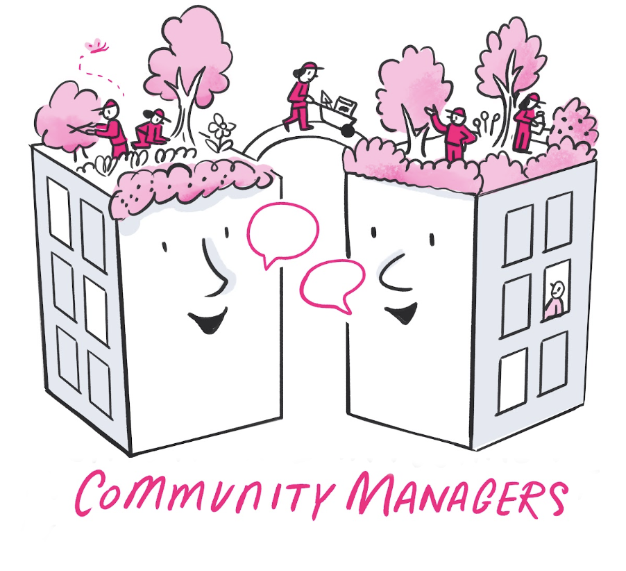

Open Research Community Management#
Research Community Managers (RCMs) enable open, inclusive, and reproducible research by connecting people, projects, and shared knowledge. RCM is a professional role that continues to be practised in research communities around the world.
This handbook preserves the resources and practices developed by the Open Research Community Management team at The Alan Turing Institute. The team was established at the Turing in 2022 and operated until 2026. It was led by Malvika Sharan from 2022 to 2024 and by Emma Karoune from 2025 to 2026.
Project status: The Turing’s RCM team is no longer active, so this handbook and repository are a historic resource and are no longer actively maintained. Details about people, projects, and meeting schedules may no longer be current. The RCM role itself, and the practices described here, remain relevant to anyone building and sustaining research communities.
Explore the handbook#
Use the RCM Playbook, which brings together the background, goals, impact, values, and principles of RCM work, how the team contributed to The Turing Way, and team information, ways of working, onboarding, meeting format, and research outputs.
Use the guide to the RCM paper to find the sections relevant to practical tasks.
Browse the resource library and read selected briefing notes.
Context#
Under the leadership of Malvika Sharan and Emma Karoune, the Turing’s RCM team worked across programmes, missions, projects, and external collaborations. Its members made implicit knowledge explicit, supported meaningful participation, and developed processes and resources that can be reused by RCMs and research communities elsewhere.
Many of the team’s RCMs also contributed to The Turing Way, an open, community-driven guide to data science. People seeking active community-management resources are encouraged to explore and contribute there.
The source and contribution guidance are available in the GitHub repository. All participants are expected to follow the Code of Conduct.